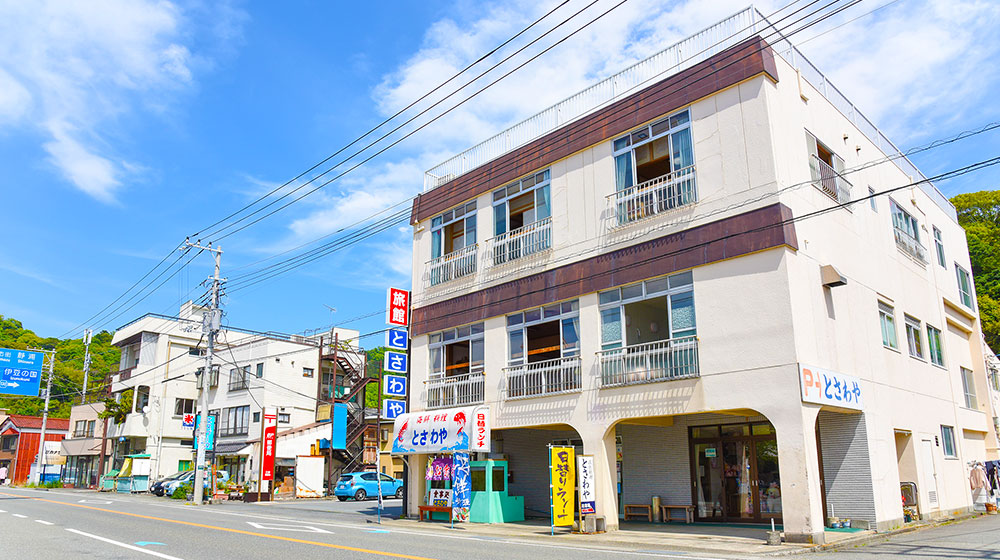
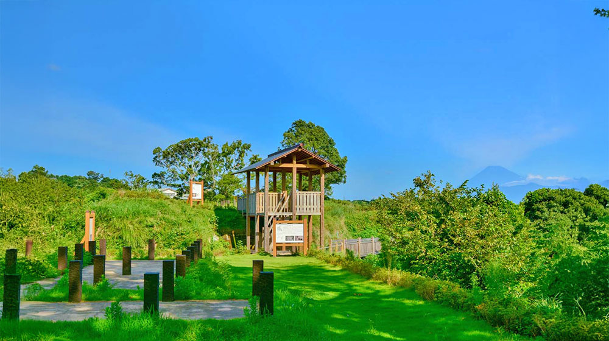
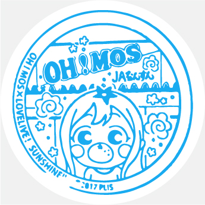
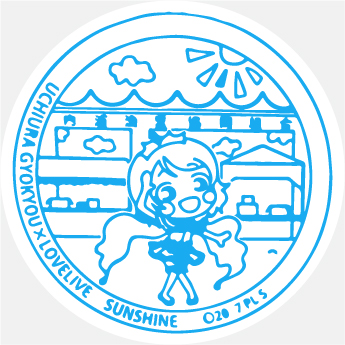

内浦エリア


とさわや
営業時間：平・休日11:00～17:00
定休日：火曜日
駿河湾の旬を味わう。季節の素材を活かした味をご堪能ください。磯料理自慢の宿「とさわや旅館」鮮度に絶対の自信あり！！水揚げされた魚は水槽に移し、お客様にお出しする直前にさばきます。豪快なお刺身盛り合わせを始めとした磯料理の数々に思わず舌鼓！活きの良いぷりっぷりの魚介類、たっぷりとご賞味ください！


安田屋旅館
旅館 浜の家
セブンイレブン 伊豆・三津
シーパラダイス前店
営業時間：24時間
定休日：---
内浦湾に面するセブンイレブン。近隣住民に愛されるコンビニとして営業中。
Grandmaシーサイド店
松月
営業時間：平・休日 10:00～17:00
定休日：火・水曜日
お客様の「美味しい」を励みに頑張っております。和菓子・洋菓子どちらも取りそろえ、真心を込めてお届けします。店内にイートインスペース（10席）がございますので、伊豆三津シーパラダイスの帰りなどにお立ち寄りください。コーヒーを飲みながらゆっくりお召し上がりいただけます。

三津海水浴場
営業時間：24時間
定休日：---
三津海水浴場は、伊豆・三津シーパラダイスのそばにある小さな海水浴場です。汀幅20m、長さ100m。船着き場と旅館の間にある小さな海水浴場。 遊覧船の発着場所も近いのでぜひご利用ください。
伊豆・三津シーパラダイス
三の浦総合案内所

長浜城跡
営業時間：24時間
定休日：---
戦国時代に関東一円を治めた後北条氏の水軍の拠点とされた城跡。国の指定文化財であり、平成27年度に史跡整備が完了しました。
沼津市立長井崎小中一貫校
営業時間：学校・平日7:55～18:00
定休日：土・日曜日
沼津市立長井崎小中一貫学校は、静岡県沼津市内浦重須にある公立小中一貫校。沼津市立内浦小学校、沼津市立西浦小学校と統合し、2021年4月1日より沼津市立長井崎小中一貫学校として開校しました。校地は前身の沼津市立長井崎中学校のものが使われています。
長井崎
営業時間：24時間
定休日：---
達磨火山は、約100万年前～50万年前に噴火した陸上大型火山のひとつです。長井崎や赤崎は達磨火山からの溶岩流が張り出した裾野の地形です。
碧テラス
営業時間：平・休日9:00～17:00
定休日：---
山麓からロープウェイに乗って約７分。葛城山の山頂は、四季折々の自然の中に、カフェや展望デッキなどを備えた広大な公園になっています。気の向くままに散策をお楽しみください。コーヒーや軽食、デザートなどが味わえるカフェやコーヒースタンドも備えています。お店のカウンター席から絶景を楽しむもよし、テイクアウトしてソファやベンチで味わうもよし。好きなスタイルでおくつろぎ下さい。
伊豆パノラマパーク
伊豆箱根鉄道

内浦漁協直営いけすや
営業時間：平・休日 11:00～14:30
定休日：水・木曜日
沼津市内浦。ここは日本一の富士山の恵みと、日本一深い駿河湾の恵み、おいしい養殖マアジを育てる自然環境から、日本一の生産出荷量を誇る養殖マアジ「活あじ」の産地として知られています。沼津内浦漁協直営「いけすや」では、内浦漁協と魚を知り尽くした漁師の奥さんたちのチームIKS（いけす）がタッグを組み、熟練の漁師が丹精込めて育てた一級品の活あじの中から当店の取扱基準を満たす『いけすやの活あじ』のみを使用し、目の前の海で水揚げし、最高に美味しい状態でお召し上がりいただけます。
辻宗商店
営業時間：平・休日 8:30～17:30
定休日：火曜日
昔ながらの駄菓子屋。聖地としてファンに愛され、今日も営業中！
おさかな食堂やまや
営業時間：平・休日 11:30～14:30 17:00～18:30
定休日：火・水曜日
2016年11月にリニューアルオープンし、「地魚料理やまや」から「おさかな食堂 やまや」へ改名されました。鮮魚店直営だから、鮮度抜群！良いものをより安く。四季折々の地魚を中心とした活魚料理を手頃なお値段でご賞味いただけます。店頭の生簀には旬の魚が泳ぎ、活魚もお召し上がりいただけます。せっかく西伊豆にお越し下さったからにはぜひとも思い出に残る美味しいものをお召し上がりいただきたい、そう願う私共はお客様の舌鼓と笑顔を励みにより美味しいものを提供すべく、日々努力を重ねております。
三津郵便局（バス停）
営業時間：24時間
定休日：---
内浦漁業協同組合前にあるバス停。
唯念名号碑
営業時間：24時間
定休日：---
江戸時代から明治時代に、唯念上人が人々の安穏を祈り各所に立てたという名号碑のひとつ。

JAふじ伊豆OH!MOS
（オーモス）
営業時間：平・休日 8:30～16:30
定休日：---
柑橘類が充実しています。伊豆に行かれる際は、ぜひお立ち寄りください！
長井崎弁天島神社
営業時間：24時間
定休日：---
長井崎弁天島神社弁天島 静岡県沼津市内浦の重栖（おもす）にある弁天島に南向きです。
アキシン商店
営業時間：平・休日10:00～17:00
定休日：土曜日
沼津港から10キロ程南下した海岸沿い、内浦にある「アキシン商店」は10代にわたって続く魚屋。沼津港に揚がる鮮魚を店主の秋山一郎さんが毎朝仕入れて店頭で販売する他、飲食店やホテルなどへも卸す。常連には、東京の有名レストランのシェフや、メディアでもお馴染みの食通が名を連ねるなど、秋山さんの目利きぶりに対する信頼は厚いです。

内浦漁業協同組合
サスナカ長澤水産
営業時間：9:00～13:00 17:00～19:00
定休日：水・土・日曜日
数々の干物をリーズナブルな価格でご提供しています。その場で焼き魚にして食べられます。
ひもの 増米
ミニストップ 沼津内浦店
営業時間：24時間
定休日：---
あわしまマリンパークの近くで営業するコンビニ。夜は周りで波音が響き渡ります。

伊豆箱根タクシー
ニュー白坂
営業時間：24時間
定休日：---
駿河湾に面し、富士山も望める眺め自慢の宿です。地元の素材をふんだんに盛り込んだ地魚の姿造りの舟盛りを始め、豪快なお料理を堪能していただけます。また、海の際まで建物が建っているので、まるで、海の中にお風呂があるみたいな錯覚を味わっていただけます。さらに、近くにはレジャー施設や海水浴場、釣りなど遊びのスポットも多数あります。